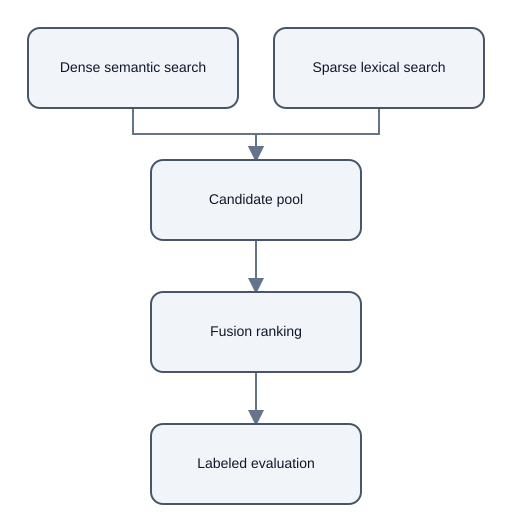

Hybrid Retrieval: Complementary Signals Need Evaluation
Summary
Hybrid retrieval combines dense semantic search with sparse lexical search, then orders the combined candidates with a fusion rule. [chunk:17e7d4229fecde32779b]
Dense search can surface a paraphrase, while lexical search can retain a rare token or exact code. [chunk:17e7d4229fecde32779b]
Evaluation considerations
Fusion cannot recover a passage that neither component retrieved, so candidate depth sets a limit on the evidence available to later stages. [chunk:17e7d4229fecde32779b]
The source recommends evaluating the complete pipeline on labeled questions; calling a method hybrid does not itself show that retrieval improved. [chunk:17e7d4229fecde32779b]
Scope
This example summarizes one ARA corpus note. It reports no retrieval benchmark measurements. [chunk:17e7d4229fecde32779b]
Diagrams

Audio summary
Listen to the 73-second narrated summary
References
- Citation ID:
chunk:17e7d4229fecde32779b- Source: 03_hybrid_retrieval.md